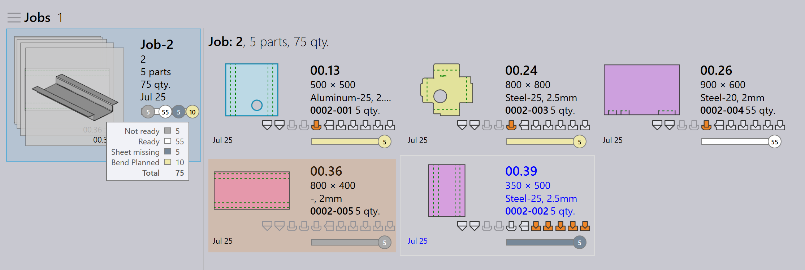
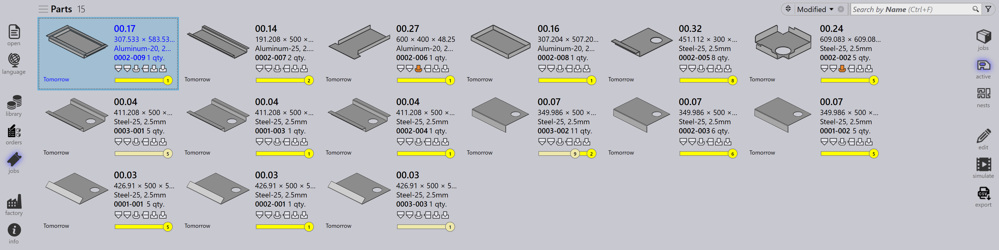

작업 보기
이 섹션에서는 작업, 부품, 네스트, 편집, 시뮬레이션 및 내보내기를 포함하여 작업 보기에서 사용 가능한 다양한 보기에 대해 설명합니다.
작업
통합 작업들 옵션을 선택하면 소프트웨어에 현재 설정된 모든 작업 목록이 표시됩니다. 작업을 두 번 클릭하여 세부 정보를 보거나 마우스 오른쪽 버튼을 클릭하여 추가 옵션에 액세스할 수 있습니다.
-
작업은 타일 보기로 표시되며, 각 작업은 Job ID, Job Ref, Customer name, Total parts, Due Date, Job status bar 등과 같은 기본 속성과 함께 표시됩니다.
-
각 작업 타일은 스택 카드 형식으로 부품 이미지도 표시합니다. 마우스 휠을 사용하여 작업의 모든 부품을 스크롤할 수 있습니다.

작업 세부 정보
-
타일을 두 번 클릭하거나 타일을 선택한 후 Enter 키를 누르면 보기가 Detail Mode로 전환됩니다.
-
세부 정보 페이지에는 부품 목록과 네스팅된 시트(레이아웃)(있는 경우)가 표시됩니다.
-
Up/Down 화살표 키를 사용하여 세부 정보 페이지에서 작업 간에 전환합니다.
-
부품 스택 위로 마우스 휠을 스크롤하면 부품 목록과 레이아웃 모두에서 부품이 강조 표시됩니다.
-
레이아웃을 선택하면 부품 목록에서 레이아웃과 네스팅된 모든 부품이 강조 표시됩니다. 강조 표시는 1분 후 자동으로 꺼집니다.

-
네스팅 요약:
-
파트들: 작업의 총 주문 항목 수와 총 수량을 표시합니다.
-
시트들: 총 시트 수량과 함께 네스팅된 총 시트 수를 표시합니다.
-
-
작업 단계들:
-
벤딩: 할당된 기계와 처리할 주문 수량을 표시합니다.
-
절단: 할당된 기계와 처리할 주문 수량을 표시합니다.
-
우선 순위
-
먼저 화면 왼쪽의 Jobs 아이콘을 클릭하고 편집할 작업을 선택한 다음 화면 오른쪽의 *edit*를 클릭합니다(Jobs 옵션이 선택되어 있는지 확인).
-
또는 선택한 작업을 마우스 오른쪽 버튼으로 클릭하고 편집을 위한 문서 체크아웃 아이콘을 클릭합니다.
-
*edit*를 클릭하면 edit job 창이 나타납니다. 이 창에서 작업의 우선 순위를 설정하거나 변경할 수 있습니다.

-
작업 부품 우선 순위에 따라 작업 타일의 작업 참조에 색상이 음영 처리됩니다.
-
작업 부품은 먼저 우선 순위별로 정렬된 다음 납기별로 정렬됩니다. 또한 우선 순위에 따라 색상이 음영 처리됩니다.
-
네스팅할 때 Urgent 부품이 먼저 고려되고, High, Normal, 마지막으로 Low 우선 순위 부품이 네스트 시트의 나머지 공간에 배치됩니다.
-
네스트 시트도 우선 순위에 따라 정렬되고 색상이 음영 처리됩니다.
| Job priority | Color description |
|---|---|
|
Urgent |
|
Normal |
|
High |
|
Low |


상태
-
작업 상태 표시줄은 색상 코드를 사용하여 처리되거나 남은 수량에 따라 작업의 진행 상황 또는 상태를 나타냅니다.
-
작업 내의 부품과 네스트 시트도 전체 JOB 내에서 개별 상태를 반영하기 위해 일치하는 색상으로 강조 표시됩니다.
-
색상 코딩은 추적을 개선하고 운영자가 생산 상태를 한눈에 쉽게 볼 수 있도록 합니다.


| Job Status | Description |
|---|---|
|
준비 안 됨 |
|
네스팅 |
|
준비 완료 |
|
Bend Planned |
|
시트 누락 |
|
벤딩 대기열 |
|
절단 대기열 |
|
완료 |


부품
활성 부품 보기는 활성 작업 내에서 현재 진행 중인 모든 부품을 표시합니다.
각 부품은 부품 이름, 치수, 재료, 두께, 수량 및 납기와 같은 주요 세부 정보를 보여주는 타일로 표시됩니다. 부품의 시각적 미리보기도 표시됩니다.
이 보기는 사용자가 개별 부품의 처리 상태를 모니터링하고 진행 중인 작업에서 진행 상황을 추적하는 데 도움이 됩니다.

네스트
활성 네스트 보기는 활성 작업 내에서 현재 진행 중인 모든 네스트를 표시합니다.
각 네스트는 부품 수 및 처리 상태와 같은 관련 세부 정보와 함께 표시됩니다. 네스팅된 부품의 시각적 레이아웃도 표시됩니다.
이 보기는 사용자가 네스팅 진행 상황을 모니터링하고 부품이 시트에 배열되고 처리되는 방식을 추적하는 데 도움이 됩니다.

편집
편집 옵션을 사용하면 선택한 항목을 수정할 수 있습니다.
현재 보기에 따라 선택한 인스턴스가 편집을 위해 열립니다:
-
작업 보기에서 선택한 작업이 편집을 위해 열립니다.
-
활성 부품 보기에서 선택한 부품이 편집을 위해 열립니다.
-
활성 네스트 보기에서 선택한 네스트가 편집을 위해 열립니다.

Export csv
내보내기 옵션을 사용하면 작업 정보를 선택하고 CSV 파일로 내보낼 수 있습니다.
-
jobs 아이콘을 클릭합니다.
-
화면 오른쪽의 export 옵션을 클릭합니다.

-
사용 가능한 필드를 보여주는 대화 상자가 나타납니다:

-
내보낼 필드의 확인란을 선택합니다.
-
선택한 필드별로 데이터를 그룹화하려면 Group By 옵션을 사용합니다.
-
Export를 클릭하여 CSV 파일을 생성합니다.
추가 정보
화면 오른쪽에 시뮬레이션, Goto 및 *뒤로*인 세 가지 추가 아이콘도 있습니다.
-
Simulate는 선택한 항목을 더 자세한 보기로 엽니다.
-
Goto는 선택한 부품 또는 네스트에 초점을 전환하고 표시합니다.
-
Back은 현재 위치에서 한 수준 뒤로 이동합니다. 예를 들어 시뮬레이션 중에 *뒤로*을 클릭하면 메인 작업으로 돌아가고 작업에서 클릭하면 메인 작업 표시로 돌아갑니다.